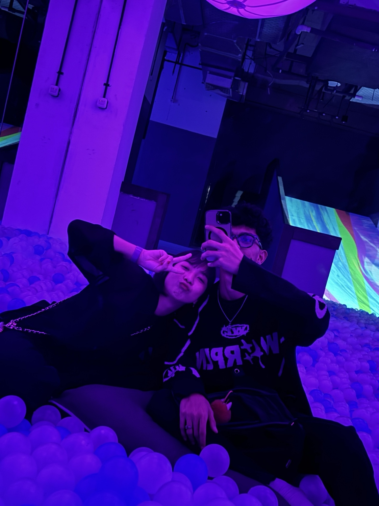
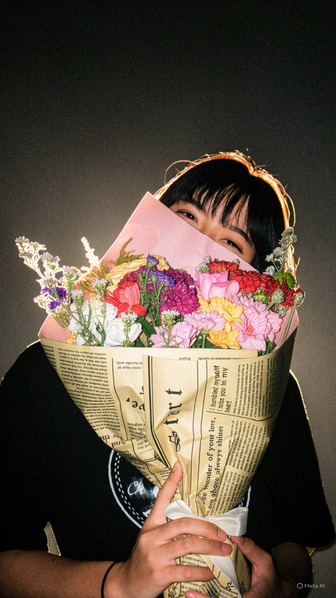
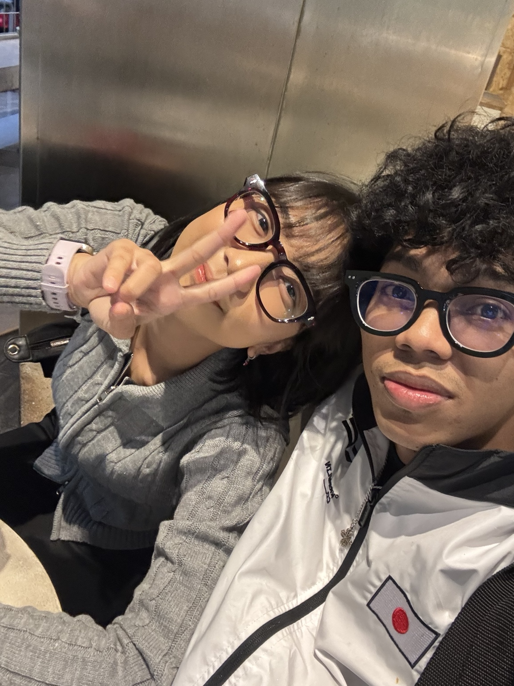
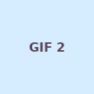
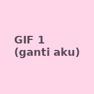

25 hal yang aku hargai darimu 💗
Sentuh foto untuk melihat lebih besar. Setiap hal kecil punya artinya sendiri.







- Caramu menjadi diri sendiri.
- Obrolan sederhana yang terasa nyaman.
- Senyummu yang membuat suasana lebih hangat.
- Caramu mendengarkan cerita.
- Hal-hal kecil yang kamu ingat.
- Kejujuranmu.
- Usahamu, bahkan saat hari terasa berat.
- Caramu menunjukkan perhatian.
- Humormu yang khas.
- Keberanianmu mencoba hal baru.
- Caramu menghargai orang lain.
- Pendapatmu yang membuatku berpikir.
- Momen tenang saat kita bersama.
- Cerita-cerita yang kamu bagikan.
- Caramu tetap belajar dan berkembang.
- Kebaikan yang kamu tunjukkan tanpa banyak bicara.
- Kesabaranmu dalam banyak hal.
- Rasa nyaman saat aku bisa menjadi diri sendiri.
- Kenangan kecil yang kita buat bersama.
- Caramu menghadapi tantangan.
- Hal-hal unik yang membuatmu berbeda.
- Kesediaanmu untuk saling memahami.
- Tawa yang kita bagi.
- Kesempatan untuk tumbuh bersama.
- Karena kamu adalah Seng, dengan caramu sendiri.